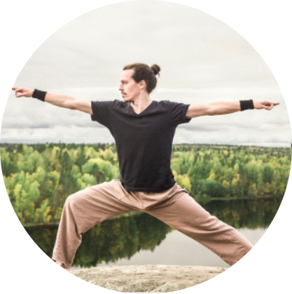
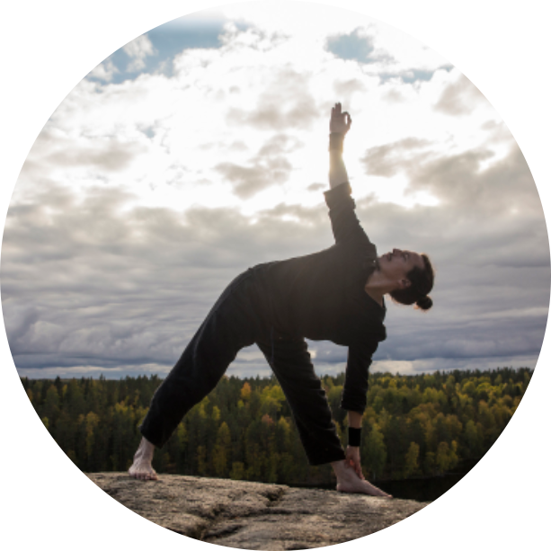
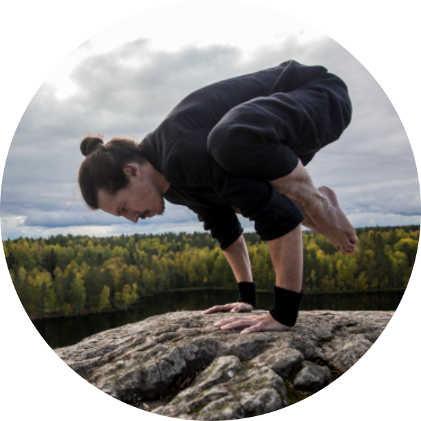
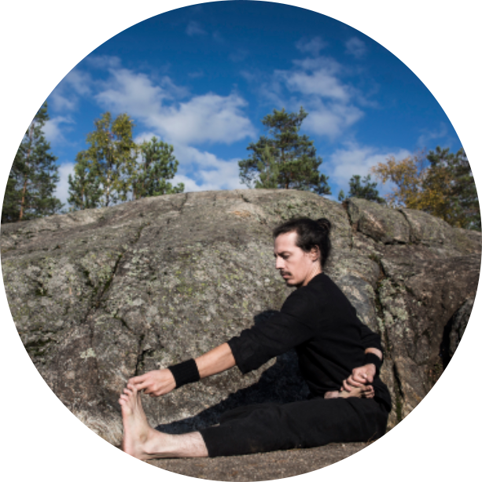

Путь к преподаванию
Моё знакомство с традицией Йоги началось 17 лет назад через погружение в книгу Сатпрема «Шри Ауробиндо или Путешествие Сознания». Это дало понимание колоссальных возможностей нашего сознания к постоянному развитию, когда от понимания себя мы можем расшириться до понимания другого человека и далее – к постижению мировых законов. Нечто внутри меня испытало тогда большую радость, будто было найдено то, что искалось много лет.
Так начался процесс интенсивной внутренней работы, называемой медитацией. Более полному погружению в эту область способствовало изучение наследия Рудольфа Штайнера, который обновил коренящееся на востоке древнее знание, гармонично объединив его с научно-ориентированным мировоззрением современного мира.
Далее состоялась поездка в Индию, оказавшая существенное влияние на дальнейшее развитие жизненных событий. При этом у меня не было стремления к поиску Учителей – я просто погружался в восприятие мистического содержания этой местности, сохранившей дух Культуры и связь с незримым. Пробудив внутри живую созидательную силу, Индия также раскрыла понимание, что для сохранения и постоянного обновления этого настроя нужно преобразовать свой телесный уровень.


Я начал поиск практик. Сначала прошёл обучение системе «Исцеляющий импульс» под руководством Владимира Вуксты. После года непрерывных занятий я впервые всецело ощутил наполненность жизненной силой и состояние абсолютного здоровья. Тело стало восприниматься не чем-то тяжёлым, но надёжным и чистым проводником воли нашего Я.
Далее мы с друзьями открыли небольшой спортивно-оздоровительный центр для более полного изучения вопросов связи физических занятий и ясности сознания. Освоили тренажёр «ПравИло», гантельную гимнастику Евгения Сандова, круговые тренировки, силовой тренинг, а также ознакомились с различными направлениями йоги, в частности, с тибетской йогой под руководством Евгения Сергеева. Также было пройдено обучение у Ричарда Грина по основам Ботмеровской гимнастики, разработанной под руководством Штайнера (её особенность – учитывание связи пространственных движений и психологических образов сознания и подсознания).
В конечном счёте мне посчастливилось открыть и погрузиться в нечто удивительное – это была практика Аштанга-Виньяса Йоги, напряжённая в процессе, но всецело умиротворяющая после своего завершения. Занятия были дополнены изучением письменных трудов прародителя стиля Ш. Т. Кришнамачарьи и его ученика Шри К. Паттабхи Джойса, а также канонических текстов йоги («Йога-сутры» Патанджали, «Хатха-Йога прадипика» Сватмарамы и др.).
Далее для чёткой структуризации имеющихся знаний и приобретения новых в 2019 году я прошёл обучение в Институте Восточных Методов Реабилитации по специальности «Преподаватель Хатха-йоги».
